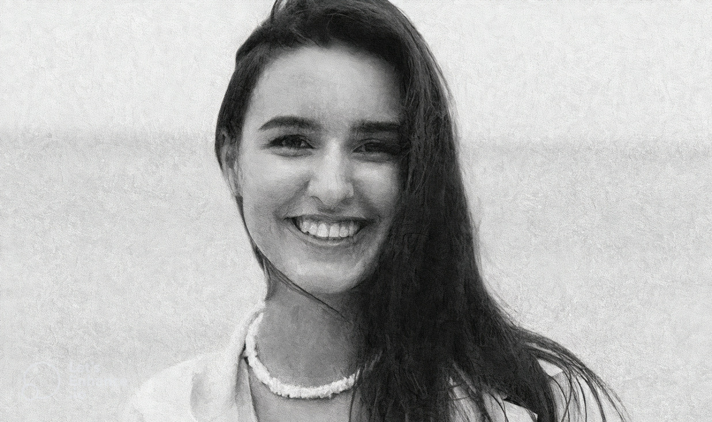
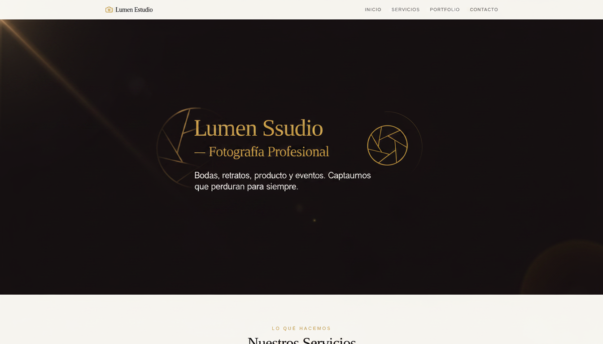

Generative Images & Digital Art
Imágenes creadas con inteligencia artificial, diseño visual avanzado, retoque digital por IA y experiencias artísticas futuristas.

Gato Vikingo IA
Generación de personajes fantásticos y criaturas cinematográficas mediante inteligencia artificial avanzada.

Exploración Espacial
Escenas futuristas y astronautas hiperrealistas creados con inteligencia artificial para proyectos sci-fi.

Arte Fantástico
Diseños artísticos generados con IA inspirados en fantasía épica, moda conceptual y universos creativos.

Ciudades Futuristas
Entornos cyberpunk generados con inteligencia artificial inspirados en neón, lluvia y estética futurista.

Exploración Épica
Escenarios de aventura y fantasía creados con IA cinematográfica inspirados en mundos legendarios.

Arte Surrealista
Composiciones artísticas y paisajes etéreos generados con inteligencia artificial y estética onírica.

Restauración Histórica - José de San Martín
Restauración profesional y colorización de fotografía histórica antigua utilizando inteligencia artificial. Comparación Antes y Después en 4K.

Versión Ghibli - José de San Martín
Conversión artística inspirada en Studio Ghibli. La figura histórica de José de San Martín se reinterpreta mediante inteligencia artificial en una animación con colores cálidos, trazos suaves y atmósfera poética.

Versión Disney - José de San Martín
Conversión artística inspirada en el universo clásico de Disney. La figura histórica de José de San Martín se reinterpreta mediante inteligencia artificial en una animación con rasgos expresivos, colores vibrantes y atmósfera mágica, evocando la calidez y el encanto de las películas animadas de Disney.

Versión Simpson - José de San Martín
Conversión artística inspirada en el universo de Los Simpson. La figura histórica de José de San Martín se transforma en una interpretación animada con piel amarilla, rasgos exagerados y líneas gruesas, evocando el estilo humorístico y satírico de Springfield. Una fusión entre historia y comedia, donde la inteligencia artificial convierte una fotografía antigua en una escena que parece parte del icónico mundo de la serie.

Versión Anime - José de San Martín
Conversión artística inspirada en el universo del anime japonés. La figura histórica de José de San Martín se transforma en una interpretación animada con líneas definidas, ojos expresivos y colores vibrantes, evocando la estética característica del anime. Una fusión entre historia y fantasía, donde la inteligencia artificial convierte una fotografía antigua en una escena que transmite energía, dramatismo y estilo visual único.

Versión Picasso - José de San Martín
Conversión artística inspirada en el estilo cubista de Pablo Picasso. La figura histórica de José de San Martín se transforma en una interpretación geométrica con planos fragmentados, colores contrastantes y perspectivas múltiples. Una fusión entre historia y vanguardia, donde la inteligencia artificial convierte una fotografía antigua en una obra que evoca la fuerza y abstracción del cubismo.

Versión Picasso - José de San Martín
Conversión artística inspirada en el estilo de animación de Pixar. La figura histórica de José de San Martín se transforma en una interpretación tridimensional con rasgos suaves, ojos expresivos y una iluminación cálida que transmite vida y carácter. Una fusión entre historia y fantasía, donde la inteligencia artificial convierte una fotografía antigua en una escena que evoca la emoción y el realismo mágico de las películas animadas de Pixar.

Mejora de Nitidez y Resolución
Comparación visual del proceso de mejora mediante inteligencia artificial. A la izquierda se muestra la imagen original y a la derecha la versión optimizada con mayor detalle, claridad y definición.

Comparador Antes / Después
Visualización interactiva del proceso de mejora mediante inteligencia artificial. A la izquierda se muestra la imagen original y a la derecha la versión optimizada con mayor nitidez, resolución y detalle. Arrastrá la barra vertical para apreciar la diferencia.
Songs & Audio Experiences
Música creada con inteligencia artificial, diseño sonoro, voces IA y experiencias futuristas.

Código Nuevo
Producción integral de un track funcional de lo-fi hip-hop / chillhop diseñado específicamente como música de enfoque (coding beats) para la plataforma Coderhouse. El proyecto demuestra versatilidad técnica para diseñar experiencias sonoras inmersivas que trascienden el pop comercial tradicional, optimizando el diseño de audio para el deep work y el estudio prolongado.

¿Quienes somos?
Desarrollo y producción de un track musical de género synth-pop / dance-pop melódico para Coderhouse. A diferencia de las piezas comerciales tradicionales, este proyecto se concibió como un "himno reflexivo" que explora la sinergia, los dilemas y el futuro de la colaboración entre la creatividad humana y la Inteligencia Artificial.

¿Puedes Crear?
Producción integral de un track musical de género electropop / dance-pop diseñado como pieza promocional y motivacional para la plataforma educativa Coderhouse. El objetivo del proyecto fue fusionar una estética sonora moderna y tecnológica con un mensaje inspirador enfocado en el aprendizaje, la programación y la co-creación.

Religion Nacional
"Religión Nacional" es un emotivo himno de pop folclórico y murga rioplatense cargado de mística mundialista. Impulsado por vientos de bronce, charangos y el constante repique de bombos de cancha, combina una voz de marcado acento local con coros colectivos que emulan el rugido de una tribuna. Su estribillo, sumamente pegadizo, define la pasión futbolera como una verdadera religión, cerrando con una atmósfera de desahogo, arraigo cultural y pura euforia popular.

La cuarta vuelta
"La Cuarta Vuelta" es un potente himno de urbano latino y dance-pop de cancha impulsado por vientos de bronce, sintetizadores y una base rítmica de murga que mantiene la energía al máximo. El tema combina una voz principal de marcado acento argentino con coros que emulan a una hinchada de estadio, alcanzando su clímax en un estribillo sumamente pegadizo. Hacia la mitad, rinde un emotivo homenaje a Maradona y Messi, cerrando con una atmósfera festiva y de orgullo colectivo ideal para celebrar en la pista de baile.

Capitan Humilde
Un himno festivo que celebra la identidad futbolística argentina. La obra fusiona ritmos de cumbia pop contemporánea con la fuerza rítmica de la cumbia barrial, rindiendo homenaje a la trayectoria y humildad de Lionel Messi. Con una narrativa que evoca la mística del "potrero" y la unión colectiva de la Selección, la pieza equilibra la nostalgia por el camino recorrido con la euforia de la gloria alcanzada en Qatar.

Innovation Pulse
Una pieza instrumental de techno minimalista que transmite innovación, precisión y movimiento constante. La composición combina sintetizadores pulsantes, líneas de bajo profundas y una estructura rítmica envolvente a 124 BPM, creando una atmósfera futurista que evoca progreso tecnológico y energía contemporánea.

Waiting for tech
modern deep house, sleek melodic techno, chill progressive electronic, inviting digital atmosphere, 118 bpm.

Digital Horizon
ethereal melodic techno, organic electronic textures, bright sparkling arpeggios, atmospheric and expansive, hopeful futuristic vibe, 122 bpm
Videos & Visual Experiences
Edición audiovisual, contenido generado con IA, motion graphics y experiencias visuales futuristas.
Homenaje Audiovisual a Akira Toriyama: Producción Integral con IA Generativa
Este proyecto es un tributo audiovisual interactivo dedicado a Akira Toriyama, creador de Dragon Ball, desarrollado íntegramente a través de un ecosistema de herramientas de Inteligencia Artificial con el objetivo principal de explorar el potencial de las tecnologías generativas actuales para recrear una estética nostálgica y lograr una profunda conexión con la audiencia, demostrando cómo la IA puede utilizarse en la producción de contenidos con un alto estándar de fidelidad. La pieza se concretó mediante la clonación de voz con IA del narrador clásico de la serie para replicar su dramatismo e entonación icónicos, la creación del diálogo y guion generado por un modelo de lenguaje que adaptó la mitología del anime, y una edición y compilación automatizada en una plataforma basada en IA que sincronizó orgánicamente las imágenes con el ritmo de la narración, validando la integración de estas herramientas en un flujo de trabajo multimedia unificado.
"What are you looking at, fool?"
En este proyecto exploré el potencial de las herramientas de IA generativa de acceso gratuito para resolver uno de los mayores desafíos del contenido audiovisual: el doblaje hiperrealista. A partir de un fragmento de video viral en español (la icónica entrevista de Lionel Messi), el flujo de trabajo consistió en traducir el audio al inglés preservando la identidad, el tono y la esencia emocional de las voces originales. Posteriormente, se aplicaron modelos de sincronización labial (lip-sync) asistidos por IA para ajustar los movimientos de la boca del hablante de forma natural con el nuevo idioma. Este caso de estudio demuestra cómo la democratización de herramientas de IA permite alcanzar resultados de calidad profesional en la localización de contenido internacional, optimizando la coherencia tanto auditiva como visual.
Personaje de IA para Publicidad Animada
En este proyecto utilicé herramientas de inteligencia artificial generativa para transformar una imagen estática de un producto de consumo masivo —un envase de crema de leche— en un personaje animado en 3D con un alto valor comercial y explicativo. El flujo de trabajo consistió en insuflar vida al empaque original añadiéndole extremidades dinámicas y un rostro expresivo de estilo cartoon, logrando un ciclo de caminata y baile (walk-cycle) fluido y carismático. Este caso de estudio demuestra el potencial de la IA para la automatización de contenidos publicitarios, reduciendo tiempos de producción y costos en la creación de mascotas de marca interactivas capaces de comunicar de forma lúdica, fresca y memorable.
AI-Driven B2B Marketing: El Pendrive Upgrade y la Automatización Corporativa
En este proyecto utilicé herramientas de IA Generativa audiovisuales para crear un personaje animado en 3D orientado al sector corporativo y de recursos humanos. A partir de una imagen estática, la IA dio vida a un pendrive antropomórfico y carismático, integrándolo de manera fluida en un entorno de oficina tecnológica. El flujo de trabajo combinó técnicas de Image-to-Video (I2V) y Video AI Motion Control para lograr movimientos corporales y gesticulaciones faciales expresivas que interactúan directamente con elementos de interfaz de usuario flotantes (UI). Este caso de estudio demuestra la viabilidad de la IA para generar contenido publicitario B2B de alto impacto, transformando conceptos abstractos de automatización y analítica de datos en narrativas visuales dinámicas, accesibles y comercialmente atractivas.
Generación de Sitios Web Inteligentes
Sitios web creados con inteligencia artificial, diseño moderno y responsive, automatización de interfaces y experiencias digitales optimizadas.

Atelier Nordeste
Diseño y desarrollo de un sitio web moderno y elegante, con experiencia responsive, identidad visual cuidada y optimización para navegación fluida.
Ver proyecto
Mendoza y Asociados
Desarrollo de una plataforma web profesional con diseño moderno, estructura optimizada y experiencia responsive orientada a transmitir confianza, claridad y presencia digital sólida.
Ver proyecto
Lumen Studio
Sitio web creado para Studio Lumen, con un diseño moderno y minimalista que refleja su identidad visual. Incluye navegación intuitiva, experiencia responsive y optimización para rendimiento, ofreciendo una plataforma clara y atractiva para mostrar sus servicios.
Ver proyectoCreando experiencias visuales impulsadas por IA.
Fusionando diseño, automatización, creatividad y tecnología para construir soluciones visuales modernas e inmersivas.